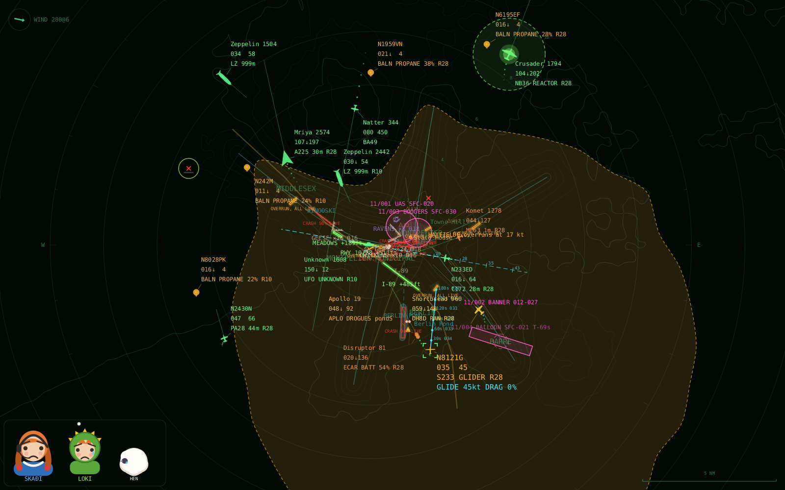

Games for Silkie and kitty¶
Play all five games in the website’s Linux terminal, or run them in native Silkie and kitty terminals. Each browser link opens a terminal filling its own window and starts the game automatically. Use Fullscreen to hide the browser controls. Each game keeps its own files and saves in this browser’s local storage; reopening its link returns to the running window.
- Play Presidential full screen
- Play Silkie Loophole full screen
- Play Ground Stop full screen
- Play Silkie Sprint full screen
- Play Silkie Scramble full screen
Presidential¶
You are President of the United States. Read the daily briefing, draft orders, and press GO to advance a day in a simulation of the world economy. Explore trade, finance, government, diplomacy, and the effects of your policies. Use F1–F9 to switch panels, B for the briefing, and ? for help. Campaigns save after each day and when you quit.
Build from the presidential checkout with
cargo install --path crates/terminal-ui, then run presidential.
The economic data and world map are embedded, so the game works offline.
See the Presidential source.
Silkie Loophole¶
A raccoon in a bedsheet goes trick-or-treating around Montpelier, Vermont. Collect candy, discover the neighbours’ routines, and keep the disguise together. Walk with arrows or WASD, press Space or Enter to interact, M for the map, J for the journal, and ? for help. Ctrl+C quits.
Install it from the repositories described under Install Sprint and Scramble below:
brew install goblinreactor/tap/silkie-loophole on Apple Silicon with macOS 26 Tahoe,
or sudo apt-get install silkie-loophole on Ubuntu 26.04 amd64 or Kylin V10 SP1
old-world LoongArch64. Then run silkie-loophole. See the
Loophole source and manual.
Ground Stop¶
The last airport in America is in Montpelier, Vermont.
A software update has grounded every airport in America except Montpelier Municipal, which still runs on floppy disks, and every aircraft in the region is coming there. Bring them down in an endless air traffic control game on a sweeping radar. Every aircraft flies a real flight model, with drag, engines, fuel, ice, and wind.
Click an aircraft to select it. W and S set its speed, A and D its heading, and Z and X its altitude. Press Enter to take the landing it offers, or click a runway, road, or field to send it there. Tab selects the next aircraft, Space pauses, and ? shows help. Press Q twice to quit.

Build from the ground-stop checkout with cargo install --path .,
then run ground-stop. Silkie draws the radar as retained vectors;
plain kitty receives the same radar as pixels. See the
Ground Stop source and manual.
Sprint and Scramble¶
Silkie Sprint and Silkie Scramble are arcade games set in the same backyard world, with a Silkie hen at the centre of each adventure. They run inside the terminal and require its graphics protocol. The videos below show the games being played in Silkie.
Both games support kitty and are optimized for Silkie. The rules, scoring, and difficulty are the same in both terminals; Silkie’s extensions improve graphics, input, and timing. See Install Silkie to get Silkie.
Install Sprint and Scramble¶
On Apple Silicon with macOS 26 Tahoe, use the Homebrew repository:
brew tap goblinreactor/tap https://brew.goblinreactor.com/homebrew-tap.git
brew install goblinreactor/tap/silkie-sprint goblinreactor/tap/silkie-scramble
On Ubuntu 26.04 amd64 or Kylin V10 SP1 old-world LoongArch64, configure the
signed APT repository for your system:
resolute for Ubuntu, or kylin for Kylin. Then install:
sudo apt-get update
sudo apt-get install silkie-sprint silkie-scramble
Open Silkie or kitty and run silkie-sprint or silkie-scramble.
The games are separate packages from the terminal. Check the repository’s
package listings for the platforms currently available.
Kylin packages use the old-world loongarch64 ABI, which differs from
new-world loong64.
Silkie Sprint¶
Hop the traffic. Ride the river. Fly when you must.
Guide a Silkie hen across roads, a railway, and a river to the henhouse. Dodge traffic, ride floating logs, and hop into empty nest boxes to lay eggs. Fill every nest and the eggs hatch. Your hen can fly briefly, but her wings need time on the ground to recover, and the sky has hazards too.
Use the arrow keys or WASD to hop and Space to fly or land. Press P to pause.
Silkie Scramble¶
Gather the chicks. Mind the fox. Bring them home.
Explore a garden maze, gather wandering chicks, and lead them back to the coop. A fox, a weasel, and a hawk threaten your brood. Bringing more chicks home together earns more points, but a longer procession is harder to keep safe. Draw temporary fences to divert predators and use garden gates to control their routes.
Use the arrow keys or WASD to move. Draw fences with the mouse, or with a pen or touchscreen in Silkie. Space places a hurdle or operates a nearby latched gate. Press P to pause.
What Silkie adds¶
Both games discover terminal capabilities at startup and use kitty’s graphics protocol for sprites. Silkie’s additional protocols provide:
Retained vector scenery, with small scene patches for changes such as nest contents, gates, and fences.
Frame presentation feedback and low-latency mode while playing.
Wide-gamut colour and HDR highlights on supported displays, plus translucent menus.
Pen and touchscreen input, haptic feedback, and custom pointer images where supported.
Terminal-side ink for pen-drawn fences in Scramble.
Run either game with --kitty-only to compare its baseline presentation
with Silkie’s enhancements, or --report to inspect detected capabilities.
Run directly in the terminal; the games do not configure graphics passthrough
for tmux or screen.